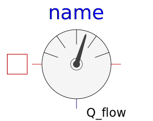

.
Modelica
.
Thermal
.
HeatTransfer
.
Sensors
Information
Contents
Name
Description
TemperatureSensor
Absolute temperature sensor in Kelvin
RelTemperatureSensor
Relative Temperature sensor

HeatFlowSensor
Heat flow rate sensor
ConditionalFixedHeatFlowSensor
HeatFlowSensor, conditional fixed Temperature
Generated at 2019-09-25T10:30:33Z by
OpenModelica 1.13.2